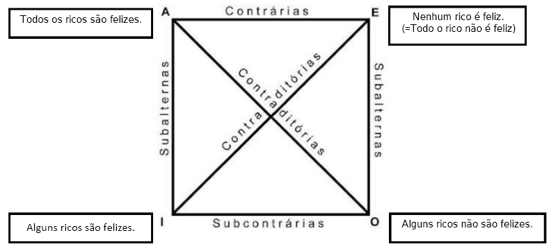

A lógica centra-se no conceito de pensamento formal, isto é, no pensamento enquanto processo e estrutura, independentemente dos conceitos pensados. Esta estuda o raciocínio, as formas de inferência e as regras que devem observar para serem válidas.
A lógica pode ser dividida em duas partes: a lógica formal, lógica da forma do argumento, e a lógica informal, lógica do conteúdo do argumento.
Conceitos importantes:
Proposição
Frase declarativa com valor de verdade. Distingue-se de não proposições, como ordens, desejos, exclamações e perguntas.
Exemplo de proposição: "A lua é feita de queijo."
Exemplo de não proposição: "Quem me dera que a lua fosse feita de queijo..."
Premissa
Proposição que fundamenta a tese.
Argumento
Conjunto de premissas bem organizadas que sustentam uma tese.
Exemplo de argumento:
Todos os seres humanos são mortais.
Sócrates é um ser humano.
Sócrates é mortal.
2.1.2) Quadrado lógico da oposição:
Relação entre os tipos de proposições:
As proposições podem ser divididas em quatro tipos:
A - universais afirmativas (todo é);
E - universais negativas (nenhum é);
I - particulares afirmativas (algum é);
O - particulares negativas (algum não é).
O quadrado lógico da oposição é um diagrama, sob a forma de um quadrado, que expressa as relações lógicas entre proposições categóricas, que utilizam o mesmo sujeito e o mesmo predicado, mas diferem entre si:
Pela qualidade, umas são afirmativas e outras são negativas;
Pela quantidade, umas são universais e outras particulares.

Quadrado lógico da oposição.
Relação entre os tipos de proposições:
Contraditórias, se diferem simultaneamente pela qualidade e pela quantidade.
A/O; E/I.
Contrárias, se, sendo universais, diferirem apenas pela qualidade.
A/E.
Subcontrárias, se, sendo particulares, diferirem apenas pela qualidade.
I/O.
Subalternas, se diferirem apenas pela quantidade.
A/I; E/O.
Princípios importantes:
Embora óbvios, o quadrado lógico da oposição permite que alcancemos certos princípios que serão importantes mais para a frente:
O princípio da identidade;
O princípio de não contradição;
O princípio do terceiro excluído.
O princípio da identidade estabelece que algo é idêntico a si mesmo: A é A - "Ursos são ursos". Embora pareça óbvio, no discurso de um debate, há quem mude o significado de uma palavra, infringindo o princípio. Se alguém afirmar categoricamente que todos os seres humanos merecem respeito enquanto seres humanos, não pode, num lance de valor lógico duvidoso, vir posteriormente a dizer que o fulano é uma criatura execrável, que não merece a mínima consideração - é que parece estar a esquecer que "fulano" também é um ser humano.
O princípio de não contradição diz que uma coisa não pode ser e não ser ao mesmo tempo. Não podemos afirmar que A é B e considerar que A não é B ou que há uma parte de A que não é B. Não posso afirmar que um ser é um urso e não é um urso.
O princípio do terceiro excluído diz que entre ser e não ser não há meio termo. Por exemplo, um ser ou é ou não é um urso, não há espaço para uma terceira opção.
2.1.3) O papel do quadrado lógico da oposição na avaliação do valor de verdade das teses:
Nas teses contraditórias, não podemos aceitar que as duas sejam verdadeiras pois, se o fizéssemos, estaríamos a entrar em contradição. Isto é particularmente importante porque para refutar um argumento, recorremos à premissa contrária daquela que queremos atacar, visto que somente uma das opções pode ser verdadeira.
Nas teses contrárias, não podemos considerar que ambas sejam verdadeiras, porque caso contrário estaríamos a entrar em contradição, mas podemos admitir que ambas sejam falsas, porque aí não há nenhuma contradição. Por exemplo, numa turma pode haver alguns alunos estudiosos e alguns alunos não estudiosos. Aí, podemos negar juntamente que todos os alunos são estudiosos e que nenhum aluno é estudioso.
Nas teses subcontrárias, podem ser as duas verdadeiras, porque se uma parte é algo, a outra parte também tem de ser algo. No entanto, não podem ser as duas falsas. Se uma for verdadeira, nada poderei saber sobre a verdade da outra. Mas, se uma for falsa, a outra tem de ser necessariamente verdadeira.
Nas teses subalternas, se a universal for verdadeira, a particular é necessariamente verdadeira. Se a universal for falsa, nada posso concluir sobre a particular. Se a particular for verdadeira, nada posso concluir sobre a universal. Se a particular for falsa, a universal também tem de ser falsa.
2.1.4) Verdade, validade e solidez:
Quando procuramos defender perante outras pessoas determinados pontos de vista (teses), recorremos a argumentos e pode acontecer que essas pessoas tentem refutar os nossos argumentos, isto é, lhes coloquem objeções. Para podermos debater, convém conhecer e saber utilizar os instrumentos adequados que permitem avaliar os argumentos. É fundamental diferenciar e perceber os conceitos de verdade, validade e solidez.
Conceitos importantes:
Verdade
A adequação entre o que pensamos acerca da realidade e aquilo que a realidade realmente é, seguindo os filósofos que afirmam que a verdade é a adequação entre o pensamento e o ser.
Curiosamente, este conceito é algo que não se aplica aos argumentos, mas sim às proposições. Por exemplo, sobre um sujeito é possível atribuir vários predicados, no entanto, somente alguns predicados são verdadeiros em relação ao sujeito:
Alguns ursos são pardos (verdadeiro);
Ursos são bípedes (falso);
Ursos são aves (falso).
O critério para decidir a verdade da proposição é a adequação com a realidade e, no caso de não haver adequação, estas são consideradas falsas.
Validade
Propriedade de um argumento cuja conclusão decorre logicamente das suas premissas.
Diferentemente da verdade, a validade é propriedade dos argumentos e encontra-se garantida se o transito das premissas do argumento para a conclusão for realizado de acordo com as regras lógicas (vamos explorá-las a seguir). Observaremos os seguintes argumentos:
A - Os ursos têm as unhas afiadas para caçar peixe. Ora, o Noa Santos Castanho é um urso. Logo, o Noa Santos Castanho tem as unhas afiadas para caçar peixe.
B - Os ursos têm as unhas afiadas para caçar peixe. O Noa Santos Castanho tem as unhas afiadas para caçar peixe. Logo, o Noa Santos Castanho é um urso.
Embora semelhantes, estes argumentos têm formas diferentes, sendo o argumento A válido e o argumento B inválido. Não é pelos ursos terem as unhas afiadas para caçar peixe que todo o animal que tenha unhas afiadas para caçar peixe seja um urso.
Ainda mais, reparem que Noa Santos Castanho não é um nome habitual para um urso, mas sim para um ser humano. Aqui encontramos um argumento com uma forma válida, mas com um valor de verdade questionável. É aqui que introduzimos o conceito de solidez.
Solidez
Atributo dos argumentos. Argumento sólido é aquele cujas premissas são verdadeiras e a forma é válida em simultâneo. Se as premissas forem verdadeiras e o argumento seguir uma forma válida, a conclusão será necessariamente verdadeira.
2.2) Lógica proposicional
2.2.1) Introdução à lógica proposicional:
Todos nós retiramos frequentemente conclusões sobre algo. Podemos concluir, por exemplo, que o estudo da filosofia leva ao desenvolvimento e fortalecimento do espírito crítico. Quando concluímos algo a partir de dados anteriores estamos a raciocinar (ou a inferir), dando origem a um argumento. Mas serão esses raciocínios que produzimos realmente corretos, isto é, válidos?
É neste campo que a lógica, no domínio formal, assume relevância, permitindo responder às questões anteriores. Se antes vimos apenas alguns princípios elementares da lógica que nos permitiram avaliar de uma forma geral a validade dos argumentos, iremos agora debruçar-nos sobre uma parte específica dela, nomeadamente a lógica proposicional. Esta, ao criar uma linguagem simbólica, a fim de evitar os equívocos da linguagem natural, procurou determinar através de um alcalculo lógico o valor de verdade das proposições completar e das inferências lógicas.
Conceitos importantes:
Inferência
Operação mental que permite retirar uma conclusão a partir da relação estabelecida entre os dados interiores, isto é, entre as premissas.
Lógica proposicional
Sistema formal que se dedica à análise das proposições que constituem um argumento.
2.2.2) Classificação das proposições:
Podemos classificar as proposições em dois tipos: as proposições simples e as proposições complexas.
Conceitos importantes:
Proposições simples
Proposições que não se podem decompor em mais proposições.
Proposições complexas
Proposições que são constituídas pela combinação de várias proposições simples, podendo ser dividida. Podemos identificá-las através de conectivas.
Na expressão "Os ursos gostam de mel e de salmão" estamos perante uma proposição, na medida em que explrime um juízo acerca da realidade e tem um valor de verdade, no entanto, poderíamos decompô-la em duas proposições:
Proposição 1 - "Os ursos gostam de mel";
Proposição 2 - "Os ursos gostam de salmão.
Na primeira formulação, temos uma proposição complexa, pois atribui-se ao urso dois predicados ("gostar de mel" e "gostar de salmão"), neste caso juntos pela palavra "e" (conjunção ).
Sendo a lógica proposicional um sistema formal, o conteúdo das expressões que compõem o argumento é em si menos relevante, dado que a analise é centrada na estrutura do raciocínio. Para eliminar a ambiguidade da linguagem natural, recorre-se à linguagem simbólica. Assim, as proposições simples são formalizadas pelas letras P, Q, R e assim sucessivamente, denominadas de variáveis. Ao fazer o dicionário (simplificar as proposições ao máximo e substutuí-las por letras), é importante colocar o verbo no infinitivo e sempre na afirmativa. Por exemplo, "Não choveu e o chão está molhado" → ¬"Chover" + "O chão estar molhado".
2.2.3) Conectivas proposicionais e a formalização de enunciados:
As conectivas são instrumentos que permitem aglomerar proposições simples em proposições complexas. Expressões como "e", "ou", "se... então" são exemplos de conectivas. A negação, apesar de não estabelecer ligação entre proposições, também é uma conectiva.
Iremos apenas estudar as conectivas verofuncionais, isto é, as conectivas que, ligadas as proposições, permitem verificar o valor de verdade do enunciado sem recorrer a mais nenhuma informação que não seja o valor de verdade das proposições simples.
O seguinte quadro descreve quais são, a sua leitura e a simbologia: